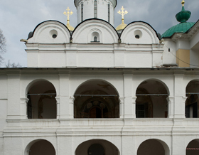
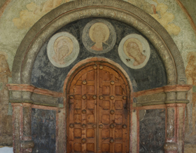
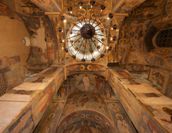
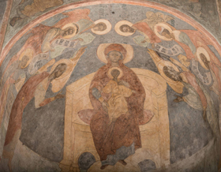
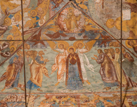

Восточный фасад

Западный фасад

Вид с северо-запада
- 
Галерея
- 
Центральный портал
Интерьер галереи
- 
Роспись сводов средокрестия

Роспись купола: Христос Пантократор, святители, пророки

Церковь Ярославских чудотворцев: Звонница
Росписи на столбах

Роспись южной стены: Поцелуй Иуды

Роспись северной стены: Сорок мучеников севастийских

Роспись конхи южной апсиды: Господь Саваоф
Роспись конхи северной апсиды: Иоанн Креститель

Роспись алтаря: Святитель Алексий, митрополит Московский

Роспись алтаря: Святитель Григорий Богослов
Иоанн Предтеча
- 
Роспись конхи центральной апсиды: Похвала Богоматери

Страшный суд

Подсвечник

Преображение

Господь Саваоф

Северный фасад

Южный фасад

Вид с юго-западного угла

Деталь оформления фасада
Деталь оформления глав

Северный фасад

Роспись южного свода: Воскресение Господне. Сошествие во ад
- 
Роспись северного свода: Вознесение Господне

Роспись южной стены: Проповедь на море

Роспись южной стены: Христос перед Каиафой

Роспись западной стены: Спор о субботе

Роспись северной стены: Вечеря в доме Симона прокажённого

Роспись западной стены: Поругание Иисуса Христа

Роспись западной стены: Усекновение главы Иоанна Предтечи

Роспись на своде: Троица Новозаветная
Роспись южной стены: Богоявление

Роспись северной стены: Исцеление в стране Гадаринской
Роспись северной стены: Хождение по водам. Сомнение Петра

Роспись южной стены: Лепта вдовицы

Роспись на своде: Успение Богоматери